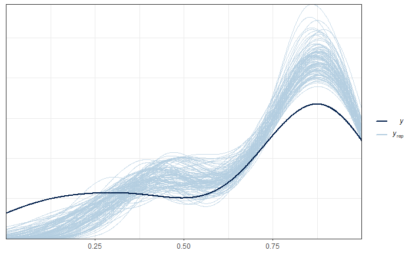
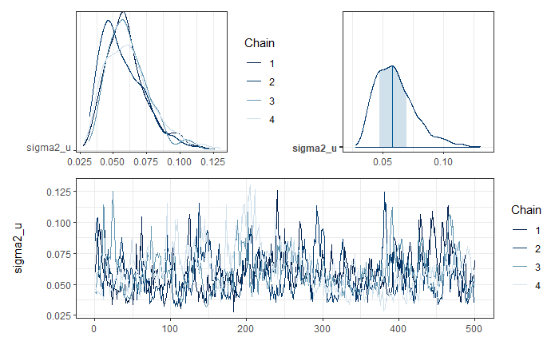
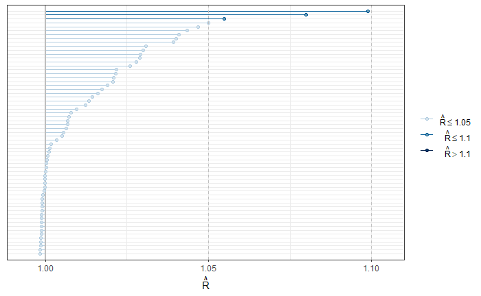

3.3 Area models - ArcSin transformation.
In its most basic conception, the Fay-Herriot model is a linear combination of covariates. However, the result of this combination can take values that fall outside the acceptable range for a proportion; that is, generally, the Fay-Herriot estimator \(\theta \in \mathbb{R}\), whereas the direct estimator \(\theta \in (0,1)\). The arcsine transformation is given by:
\[ \hat{z}_d = \arcsin\left( \sqrt{ \hat{\theta}_d} \right) \]
where
\[ Var\left( \hat{z}_d \right) = \frac{\widehat{DEFF}_d}{4\times n_d} = \frac{1}{4\times n_{d, \text{effective}} } \]
The Fay-Herriot model is defined as follows:
\[ \begin{align*} Z_d \mid \mu_d,\sigma^2_d & \sim N(\mu_d, \sigma^2_d)\\ \mu_d & = \boldsymbol{x}^{T}_{d}\boldsymbol{\beta} + u_d \\ \theta_d & = \left(\sin(\mu_d)\right)^2 \end{align*} \]
where \(u_d \sim N(0 , \sigma^2)\).
Let the prior distributions for \(\boldsymbol{\beta}\) and \(\sigma_{u}^{2}\) be given by:
\[ \begin{align*} \boldsymbol{\beta} \sim N\left(0,1000 \right)\\ \sigma_{u}^{2} \sim \text{IG}\left(0.0001,0.0001\right) \end{align*} \]
3.3.1 Estimation procedure
Reading the database that resulted in the previous step and selecting the columns of interest
library(tidyverse)
library(magrittr)
base_FH <- readRDS('Recursos/04_FH_Arcosin/01_base_FH.Rds') %>%
transmute(dam2, ## id dominios
pobreza,
T_pobreza = asin(sqrt(pobreza)), ## creando zd
n_effec = n_eff_FGV, ## n efectivo
varhat = 1/(4*n_effec) ## varianza para zd
)Joining the two databases.
statelevel_predictors_df <-
readRDS('Recursos/03_FH_normal/02_statelevel_predictors_dam.rds') %>%
mutate(id_order = 1:n())
base_FH <-
full_join(base_FH, statelevel_predictors_df, by = "dam2")
tba(base_FH[, 1:8] %>% head(10))| dam2 | pobreza | T_pobreza | n_effec | varhat | area1 | sex2 | age |
|---|---|---|---|---|---|---|---|
| 0101 | NA | NA | NA | NA | 1.0000 | 0.5087 | 2.5043 |
| 0102 | 0.9836 | 1.4422 | 1029.570 | 2.000000e-04 | 1.0000 | 0.4754 | 2.4689 |
| 0103 | 1.0000 | 1.5708 | 0.000 | 2.226882e+57 | 1.0000 | 0.5037 | 2.2858 |
| 0201 | NA | NA | NA | NA | 0.5147 | 0.5060 | 2.5517 |
| 0202 | 0.9391 | 1.3215 | 5881.354 | 0.000000e+00 | 0.9986 | 0.5376 | 2.7635 |
| 0203 | 0.8117 | 1.1219 | 6965.029 | 0.000000e+00 | 0.9754 | 0.5432 | 2.8765 |
| 0204 | NA | NA | NA | NA | 1.0000 | 0.5300 | 2.6401 |
| 0205 | 0.9646 | 1.3814 | 11790.358 | 0.000000e+00 | 1.0000 | 0.5182 | 2.6644 |
| 0206 | NA | NA | NA | NA | 1.0000 | 0.5157 | 2.3750 |
| 0207 | NA | NA | NA | NA | 1.0000 | 0.5097 | 2.4257 |
Selecting the covariates for the model.
3.3.2 Preparing Inputs for STAN
- Splitting the database into observed and unobserved domains
Observed domains.
Unobserved domains.
- Defining the fixed-effects matrix.
## Observed domains
Xdat <- cbind(inter = 1,data_dir[,names_cov])
## Unobserved domains
Xs <- cbind(inter = 1,data_syn[,names_cov])- Creating a parameter list for
STAN.
sample_data <- list(
N1 = nrow(Xdat), # Observed.
N2 = nrow(Xs), # Unobserved.
p = ncol(Xdat), # Number of regressors.
X = as.matrix(Xdat), # Observed Covariates.
Xs = as.matrix(Xs), # Unobserved Covariates
y = as.numeric(data_dir$T_pobreza),
sigma_e = sqrt(data_dir$varhat)
)- Compiling the model in
STAN.
library(rstan)
fit_FH_arcoseno <- "Recursos/04_FH_Arcosin/modelosStan/15FH_arcsin_normal.stan"
options(mc.cores = parallel::detectCores())
rstan::rstan_options(auto_write = TRUE) # speed up running time
model_FH_arcoseno <- stan(
file = fit_FH_arcoseno,
data = sample_data,
verbose = FALSE,
warmup = 2500,
iter = 3000,
cores = 4
)
saveRDS(model_FH_arcoseno,
"Recursos/04_FH_Arcosin/02_model_FH_arcoseno.rds")3.3.2.1 Model results for the observed domains.
library(bayesplot)
library(patchwork)
library(posterior)
y_pred_B <- as.array(model_FH_arcoseno, pars = "theta") %>%
as_draws_matrix()
rowsrandom <- sample(nrow(y_pred_B), 100)
y_pred2 <- y_pred_B[rowsrandom, ]
ppc_dens_overlay(y = as.numeric(data_dir$pobreza), y_pred2)
Graphical analysis of the convergence of \(\sigma^2_u\) chains.
posterior_sigma2_u <- as.array(model_FH_arcoseno, pars = "sigma2_u")
(mcmc_dens_chains(posterior_sigma2_u) +
mcmc_areas(posterior_sigma2_u) ) /
mcmc_trace(posterior_sigma2_u)
To validate the convergence of all chains, the R-hat is used.
parametros <- summary(model_FH_arcoseno, pars = c("theta", "theta_pred") )$summary %>%
data.frame()
p1 <- mcmc_rhat(parametros$Rhat)
p1
Estimation of the FH of poverty in the observed domains.
theta_FH <- summary(model_FH_arcoseno,pars = "theta")$summary %>%
data.frame()
data_dir %<>% mutate(pred_arcoseno = theta_FH$mean,
pred_arcoseno_EE = theta_FH$sd,
Cv_pred = pred_arcoseno_EE/pred_arcoseno)Estimation of the FH of poverty in the NOT observed domains.
theta_FH_pred <- summary(model_FH_arcoseno,pars = "theta_pred")$summary %>%
data.frame()
data_syn <- data_syn %>%
mutate(pred_arcoseno = theta_FH_pred$mean,
pred_arcoseno_EE = theta_FH_pred$sd,
Cv_pred = pred_arcoseno_EE/pred_arcoseno)| dam2 | pobreza | pred_arcoseno | pred_arcoseno_EE | Cv_pred |
|---|---|---|---|---|
| 0101 | NA | 0.8630 | 0.1463 | 0.1696 |
| 0201 | NA | 0.8797 | 0.1426 | 0.1621 |
| 0204 | NA | 0.8412 | 0.1592 | 0.1893 |
| 0206 | NA | 0.8980 | 0.1296 | 0.1443 |
| 0207 | NA | 0.8958 | 0.1321 | 0.1475 |
| 0208 | NA | 0.7818 | 0.1893 | 0.2421 |
| 0209 | NA | 0.8910 | 0.1313 | 0.1474 |
| 0210 | NA | 0.8990 | 0.1290 | 0.1435 |
| 0211 | NA | 0.8872 | 0.1389 | 0.1566 |
| 0502 | NA | 0.7649 | 0.1889 | 0.2470 |
consolidating the bases of estimates for observed and UNobserved domains.